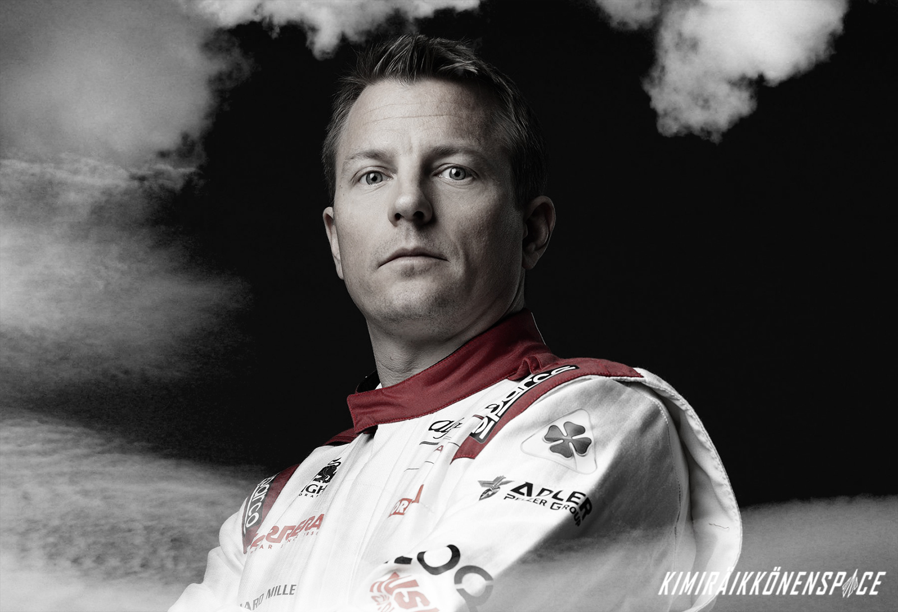

Kimi Räikkönen biography
Current position: Alfa Romeo Racing F1 Driver
Fast-tracked into the sport with the shortest CV on four wheels, the unknown newcomer who came from nowhere and said next to nothing immediately proved he knew exactly what he was doing: driving a Formula One car as fast as it could possibly go. The car couldn’t always keep up with his talent and it took seven seasons for Kimi ‘Iceman’ Raikkonen to become World Champion. Notoriously inanimate and uncommunicative, the silent speedster’s frozen expression in fact masked the hidden depths in one of the coolest, most original characters in the sport’s history…
Kimi Matias Raikkonen spent his childhood in a house built by his great grandfather in Espoo, a suburb of the Finnish capital, Helsinki. To provide for Kimi, born on October 17, 1979, and his older brother Rami, their hard-working parents Matti and Paula toiled, respectively, as a road builder and an office clerk. Money was scarce but the Raikkonens were a happy family and their humble homestead surrounded by open countryside was an ideal environment for the two rambunctious youngsters to flex their racing muscles. At first (when Kimi was just three years old) the brothers tore around on miniature motocross bikes fitted with training wheels. A move to karts paved the way for Kimi (who began competitive karting at 10) and Rami (who eventually became a successful rally driver) to make rapid progress in motorsport, though it came at a cost. Matti had to work nights as a taxi driver and nightclub bouncer and funds diverted to karting meant plans to replace the outside lavatory with a proper bathroom in the family home had to be postponed.
Kimi, a reluctant student who used his schoolbag as a sled to slide down snow-covered hills, enjoyed winter sports, especially ice hockey, though he eventually gave it up because he hated getting up for early-morning practice. At 16 he left school and enrolled in a course for mechanics, believing this skill might be the only way to stay involved in motorsport. Very soon his mechanical expertise, and the need for family funding, became superfluous, as Kimi’s natural talent for driving fast led to sponsored rides.
Following a rapid series of successes in Finnish, Nordic and European karting, he jumped into a racing car and promptly won two British-based Formula Renault championships. In the fall of 2000, despite having just 23 car races to his name, he was given a test by the Sauber Formula One team. Impressed by his immediate pace and assured approach, Sauber shrewdly signed the 21-year old to drive for them in 2001. His having short-circuited the conventional route to the top provoked fierce debate over his right, let alone his readiness, to race at the pinnacle of motorsport. Raikkonen rapidly silenced his critics (he finished sixth in his Grand Prix debut) and attracted the attention of McLaren, who saw him as a likely successor to the retiring two-time champion, Mika Hakkinen.
One Finn after another proved to be a good thing for McLaren, for whom Kimi the ‘Iceman’ never gave less than his maximum, always driving to a personal limit that at least equalled, sometimes exceeded, the best of his peers. Experts endlessly praised his seamless, straightforward, mostly mistake-free style. “I never really think about what I’m doing,” Kimi said in a rare outburst of self-analysis. “I just do it.”
His five seasons at McLaren coincided with a period of unevenly performing, often unreliable, cars. Yet he finished second in the championship twice (2003 and 2005), won nine races and finished in the top three on 36 occasions. His podium appearances and subsequent TV interviews exposed him to public scrutiny under which he tended to squirm and fidget, tugging his ears, rubbing his nose and trying to hide beneath his baseball cap. He seldom smiled, spoke sparingly in a mumbled monotone, then all but ran for the nearest exit.
Yet in his private life the poker-faced enigma’s icy reserve was prone to spectacular bouts of thawing out. ‘Drunken Race Ace Kimi Bounced Out Of Lapdance Club For Fiddling With His Gearstick!’ shrieked a headline in a British tabloid newspaper. Spanish media gleefully reported that the vodka-loving Flying Finn was found lying fast asleep outside a bar embracing an inflatable rubber dolphin. In Monaco he was filmed cavorting on a yacht, swaying unsteadily on the upper deck then falling onto a lower level where he landed on his head.
“What I do in my private life doesn’t make me drive any slower,” the free-spirited speedster insisted. In truth, the Iceman’s private life was running smoothly and he was well-settled on the domestic front, having in 2004 married Jenni Dahlman, a gorgeous Finnish fashion model and former Miss Scandinavia. At their sumptuous Swiss home there was plenty of room for their two dogs and Kimi’s car collection. Asked to name his most prized possessions, he replied: “My wife and my Ferrari Enzo.”
In 2007 he began driving a Ferrari Formula One car for a living, having been hired (for a reported $41 million a year) to fill the considerable void left by the departing seven-time World Champion Michael Schumacher, whose unrivalled work ethic and team leadership qualities were not part of a Raikkonen repertoire that seemed more akin to another past champion. A week before his debut with the team, Ferrari’s new recruit was in Finland, winning a dangerous snowmobile race he had entered under the alias of ‘James Hunt.’ When the same ‘James Hunt’ later competed in a powerboat race dressed in a gorilla suit Kimi said he invoked the name of his hero as a riposte to the media sensationalization of his private life.
He got off to a fast start with Ferrari, winning the season-opener from pole position, though by the penultimate race he was third in the driver standings, behind the McLaren team mates Fernando Alonso, seeking a third successive title, and Lewis Hamilton, the record-breaking rookie. Though Raikkonen had won more races, five to their four apiece, he remained the long shot among the trio of contenders at the final race, in Brazil. The phlegmatic Finn delivered sensationally, winning the race and the 2007 World Drivers’ Championship by a single point.
On the podium the new champion swigged as much champagne as he sprayed and, grinning at last, the Iceman broke his silence with a veritable torrent of words. “I’m very happy. I came from pretty much nothing but my family, friends and sponsors helped me get here. People will probably look differently at me and make up more stories about me. But I am going to lead my life as I want and that’s it.”
And so he did. In two more seasons with Ferrari his results tapered off, as did his interest in continuing. At the end of 2009 Ferrari offered him a lucrative way out by buying up the final year of his contract (to make way for Fernando Alonso). Kimi spent the next two seasons amusing himself in the World Rally Championship, an experience he found no substitute for competing at the pinnacle of motorsport, where an opportunity to make a comeback came quickly. At the end of the 2011 season the Lotus Renault GP F1 team announced that in 2012 it would be led by Kimi Raikkonen.